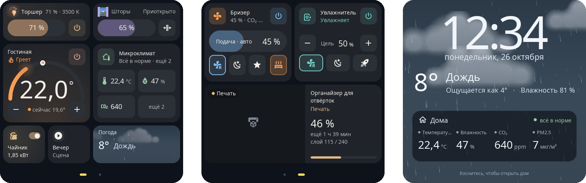
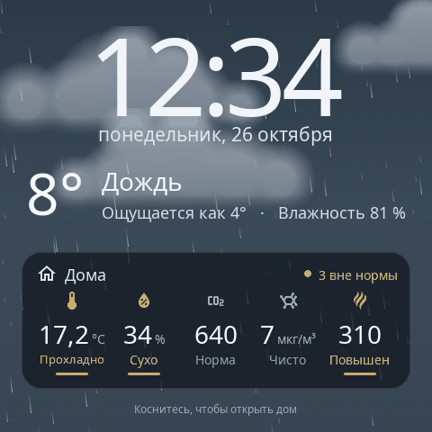
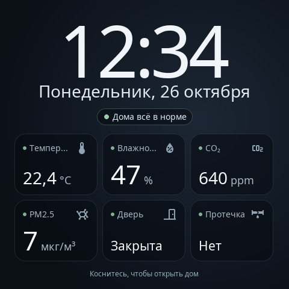
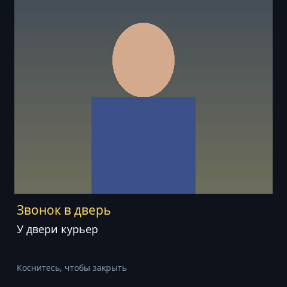
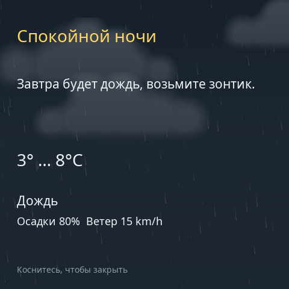

S1E Panel — кастомная прошивка для Aqara Magic Switch S1E. Она заменяет заводской интерфейс быстрой нативной панелью Home Assistant: ваш свет, шторы, климатическая техника и датчики — не только Aqara — на отзывчивом сенсорном экране 480 × 480.

Ни панель, ни Home Assistant не нужны: устройства имитируются.
Целый экран панели из живых карточек. Включите свет, подвигайте яркость, выберите цвет, откройте шторы, настройте термостат — и переставьте всё по-своему.
Открыть конструктор →Все типы карточек вживую, в настоящем размере на панели, с сущностями Home Assistant и настройками, которые они поддерживают.
Смотреть карточки →Настоящий редактор панели с демо-данными. Его предпросмотр — рендерер самой прошивки, скомпилированный в WebAssembly: ровно то, что рисует панель.
Открыть редактор →Сделана для Home Assistant, задумана для стены.
Свет, шторы и рулонные шторы, термостаты, увлажнители, вентиляторы, бризеры, микроклимат, выключатели, сцены и скрипты, помощники, погода, медиаплеер и 3D-принтер.
Нативная отрисовка на LVGL и страницы, которые листаются свайпом. Лампа светится своим цветом, штора движется в окне с настоящим небом, вентилятор крутится с реальной скоростью.
Несколько страниц на сетке 8 × 8, карточки до 11 размеров, свои цвета, иконки, подписи и только нужные режимы устройств.
Веб-редактор на самой панели с живым предпросмотром, а добавлять и переставлять карточки можно и прямо на экране.
Часы, живая погода, показатели дома или ваши фото — или всё по очереди. Home Assistant присылает сообщения с прогнозом или снимком с камеры у двери.
Интеграция подключается одним касанием на панели. Обновления приходят по Wi-Fi, подписаны и откатываются автоматически.
Отрисованы собственным рендерером S1E Panel в разрешении панели.




Каждая карточка подстраивается под размер: на больших больше управления.
Один раз через сервисную консоль, дальше все обновления по Wi-Fi.
Читать руководство по установке
Независимый проект. S1E Panel не создана, не одобрена и не поддерживается Aqara или Lumi United Technology. Установка требует вскрыть устройство, питающееся от электросети, и паять на его плате; это может лишить гарантии, а ошибки — повредить панель. Вы действуете на свой страх и риск — сначала прочитайте предупреждение о безопасности.